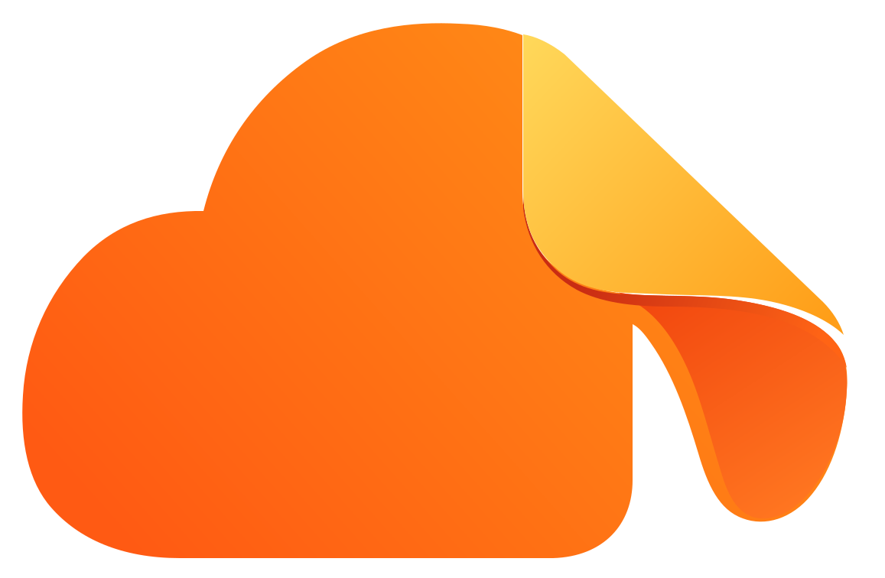

稿源为外部提供的 1536×1024 原始 SVG。工程化处理：补 <svg> 开标签、
裁到图形范围（原稿四周留白约 40%）、删除未使用的 softLight 滤镜与 bodyClip。
另出小尺寸简化版：精细版 7 组渐变叠 12 路径在 16–32px 会糊成橙团，简化版只留 4 个面，靠形状读图。
dogear-mark-20261002.svgdogear-mark-20261002-flat.svg
72下面是直接放新图形标的 tab（橙黄图形在浅灰 tab 底上对比充足，不一定需要深色底衬）。
DogEar · 工作台